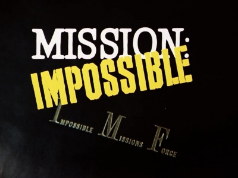
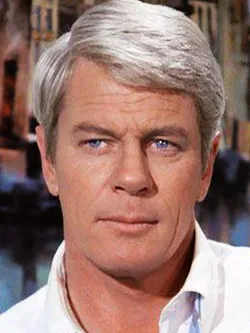
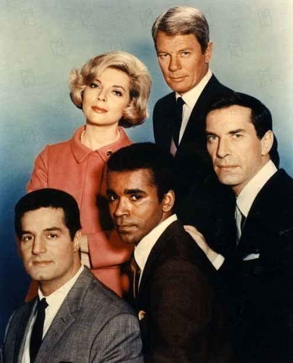

C'est mon père qui m'a mis dedans.
La version qu'il m'a fait découvrir, c'était celle des années 80 — la série revival. Mais sa propre série d'ado, celle qu'il avait connue enfant, c'était l'originale de 1966.
Ce n'est que des années plus tard que j'ai remonté le fil jusqu'à cette version-là. Deux générations, une même musique.
Le thème de Lalo Schifrin, je l'aurais reconnu les yeux fermés avant même de connaître son nom. Les masques en latex qui trompaient tout le monde à l'écran, ces enregistrements qui s'autodétruisaient après lecture, cette mécanique d'espionnage précise comme une horlogerie.
Mais ce qui m'a le plus marqué, c'est un homme. Peter Graves. Jim Phelps.
Une autorité tranquille, un charisme qui n'avait jamais besoin d'élever la voix pour convaincre qu'il contrôlait tout.
Ce soir, on remonte jusque dans les années 60'.

Mission: Impossible — générique, 1966
Mission: Impossible.
1966. Créée par Bruce Geller pour CBS. Sept saisons, jusqu'en 1973.
Une équipe d'agents secrets — l'Impossible Missions Force — reçoit chaque semaine une mission via une bande magnétique qui s'autodétruit après lecture. La cible : dictateurs, criminels, gouvernements hostiles. La méthode : jamais la force brute. Toujours la ruse, l'infiltration, le déguisement.
Steven Hill incarne Dan Briggs, le premier chef d'équipe, pendant la saison 1. Dès la saison 2, c'est Peter Graves qui prend la tête de l'IMF dans le rôle de Jim Phelps — celui qui restera associé à la série pour le grand public.
Autour de lui, une équipe de spécialistes récurrents : Rollin Hand, maître du déguisement, Cinnamon Carter, l'atout charme et intelligence, Barney Collier, le génie de la technique, Willy Armitage, la force tranquille.
Le thème musical de Lalo Schifrin, en 5/4, devient instantanément culte.
Mission: Impossible n'est pas un show d'action au sens où on l'entend aujourd'hui.
C'est un thriller de précision, où chaque mission est une mécanique d'horlogerie.
1966.
La télévision américaine cherche son James Bond du petit écran. Depuis 1962 et Dr. No, l'espionnage est devenu un genre grand public, et chaque network veut sa propre déclinaison télévisée du phénomène — The Man from U.N.C.L.E. a ouvert la voie deux ans plus tôt.
Bruce Geller propose autre chose. Pas un espion charismatique solitaire à la Bond, mais une équipe. Pas de gadgets tape-à-l'œil, mais de la ruse pure — déguisements, manipulation psychologique, infiltration méthodique.
CBS achète le concept. Le pilote est tourné avec Steven Hill dans le rôle principal, Dan Briggs. Mais Hill, pratiquant orthodoxe du judaïsme, refuse de tourner le vendredi soir après le coucher du soleil — un conflit permanent avec les plannings de tournage qui pousse la production à le remplacer dès la saison 2.
Peter Graves arrive alors. Déjà connu pour Fury et quelques rôles au cinéma, frère cadet de James Arness — la star de Gunsmoke. Graves apporte à Jim Phelps quelque chose que Briggs n'avait pas : une autorité paternelle, chaleureuse mais ferme, qui va définir l'image du personnage pour les décennies suivantes.
La série innove aussi sur le plan technique. Les fameuses bandes magnétiques qui s'autodétruisent deviennent un running-gag structurel — "Bonne chance, Jim" — répété chaque épisode, devenu un tic culturel que même ceux qui n'ont jamais vu la série reconnaissent.
Lalo Schifrin compose le thème en mesure à 5 temps — une signature rythmique inhabituelle qui contribue à l'identité sonore immédiatement reconnaissable de la série.
Mission: Impossible ne ressemble à rien d'autre sur les écrans américains de 1966.

Peter Graves — Jim Phelps, Mission: Impossible
Chaque épisode suit la même mécanique, et c'est précisément ce qui en fait la force.
Jim Phelps reçoit sa mission via un enregistrement audio, souvent caché dans un lieu incongru — une cabine téléphonique, un juke-box, un magasin de disques. La bande lui expose la situation : un dictateur à déstabiliser, un criminel à piéger, un gouvernement hostile à manipuler de l'intérieur. Puis vient la formule rituelle — s'il est capturé ou tué, le gouvernement niera toute connaissance de ses actions. Et l'enregistrement s'autodétruit.
Phelps choisit alors son équipe parmi un éventail de spécialistes, en étalant leurs photos sur une table.
Le reste de l'épisode est une mécanique de précision. L'équipe construit une fausse réalité autour de sa cible — de faux décors, de fausses identités, de faux événements — pour la manipuler sans qu'elle se doute jamais qu'elle a été piégée. Rollin Hand se glisse dans la peau d'un autre grâce à ses masques. Cinnamon Carter séduit et distrait. Barney Collier pirate, câble, désamorce. Willy porte, soulève, protège.
Aucune fusillade spectaculaire, aucune course-poursuite systématique.
Juste l'intelligence collective d'une équipe qui a toujours un coup d'avance.
Ce qui distingue Mission: Impossible de tout ce qui l'entoure en 1966, c'est son refus absolu du surhomme.
James Bond agit seul, séduit, tue, improvise avec panache. Mission: Impossible fait l'inverse total — c'est une série sur la préparation méticuleuse, sur l'intelligence collective, sur des professionnels qui ne laissent jamais rien au hasard. Le suspense ne vient pas de l'incertitude sur l'issue — l'IMF gagne toujours — mais du plaisir presque mathématique de voir le plan se dérouler avec précision.
Peter Graves incarne exactement cette philosophie. Jim Phelps ne lève jamais la voix, ne panique jamais, ne doute jamais visiblement. Son autorité tient entièrement dans le calme — une confiance tranquille qui rassure autant les autres personnages que le spectateur. C'est un leadership par la maîtrise plutôt que par la force, et Graves lui donne une chaleur paternelle qui manquait au Dan Briggs plus froid de la saison 1.
Les masques en latex, aujourd'hui un peu datés visuellement, restent un dispositif narratif brillant. Ils permettent à la série de jouer constamment avec l'identité, la manipulation, la question de qui est réellement qui — bien avant que ce genre de twist ne devienne un poncif du thriller moderne.
Et cette bande qui s'autodétruit, ce rituel répété à l'identique chaque semaine, fonctionne comme une porte d'entrée immédiatement reconnaissable — le spectateur sait qu'il entre dans un monde où rien n'est laissé au hasard, où même l'oubli est planifié.
Mission: Impossible a posé les bases d'un genre entier — le thriller d'équipe, la mission impossible rendue possible par l'intelligence plutôt que la force.
Tout ce qui a suivi, y compris la franchise cinéma des années 90 et au-delà, lui doit quelque chose.

L'équipe IMF au complet — Mission: Impossible, 1966
Mission: Impossible version 1966 n'a pas disparu du jour au lendemain. Elle a été progressivement recouverte par sa propre descendance.
Le premier signe est venu de l'intérieur. En 1988, une nouvelle série revival reprend le concept avec de nouveaux acteurs — celle que j'ai découverte enfant grâce à mon père. Elle rend hommage à l'originale, mais introduit malgré elle une confusion générationnelle : pour beaucoup, "Mission: Impossible", c'est déjà cette version des années 80, pas celle de 1966.
Puis 1996 arrive, et Tom Cruise change définitivement la donne. Le film de Brian De Palma reprend le nom, le thème musical de Schifrin, quelques clins d'œil au concept original — et transforme la franchise en blockbuster d'action pure, centrée sur un héros solitaire plutôt que sur une équipe. La franchise cinéma explose commercialement au point d'effacer presque entièrement la mémoire collective de ce qui existait avant.
Aujourd'hui, dire "Mission: Impossible" évoque immédiatement Tom Cruise suspendu à une paroi rocheuse ou accroché à un avion en plein décollage. Peter Graves, Jim Phelps, les bandes qui s'autodétruisent — tout ça est devenu l'affaire d'une poignée de connaisseurs et de fans de télévision vintage.
La série originale n'a pourtant jamais cessé d'exister. Elle tourne encore sur certaines chaînes câblées américaines, elle a son public fidèle de nostalgiques.
Mais dans la conversation culturelle dominante, elle s'est fait absorber par ce qu'elle a elle-même engendré.
Parce qu'avant l'action spectaculaire, il y avait l'intelligence pure — et ce genre de thriller a presque disparu du paysage actuel.
La série originale offre quelque chose que la franchise cinéma moderne a largement abandonné : le plaisir de regarder un plan se construire, pièce par pièce, sans qu'aucune explosion ne vienne masquer la mécanique. C'est un cinéma de la patience, de l'observation, où chaque détail compte.
Peter Graves mérite d'être redécouvert pour ce qu'il apportait précisément — un charisme qui ne reposait sur aucune démonstration de force physique. Une autorité qui tenait entièrement dans la voix, le regard, la certitude tranquille que tout était sous contrôle. C'est un registre d'acteur qu'on voit rarement aujourd'hui, où le charisme se mesure encore trop souvent à l'action plutôt qu'à la présence.
Et il y a cette dimension d'équipe, structurante, qui a presque disparu du genre espionnage moderne — chaque spécialiste apportant une compétence irremplaçable, aucun individu ne portant seul le poids de la mission.
Revoir Mission: Impossible version 1966 aujourd'hui, c'est redécouvrir la source d'un nom devenu synonyme d'autre chose.
Et comprendre que la version originale avait peut-être une élégance que ses héritiers ont fini par sacrifier.
Il y a ce geste, répété chaque semaine, identique à lui-même — la bande qui grésille, qui s'enflamme, qui disparaît en fumée dans un cendrier ou une corbeille.
Aucune mission ne laisse de trace. Aucun agent n'existe officiellement. Tout doit pouvoir être nié.
C'est peut-être ça, la vraie signature de la série — cette discrétion absolue, ce refus de tout héroïsme visible, cette équipe qui accomplit l'impossible sans jamais chercher à ce qu'on s'en souvienne.
Enfant, mon père avait grandi avec ce Jim Phelps-là. Des années plus tard, c'est une autre version qu'il m'a transmise. Celle-ci a traversé le temps sans prendre une ride.
La cassette est dans le lecteur. On rembobine.
Titre original
Mission: Impossible
Pays
États-Unis
Genre
Espionnage / Thriller
Diffusion
CBS, 1966–1973 (7 saisons)
Créateur
Bruce Geller
Avec aussi
Steven Hill · Martin Landau · Barbara Bain
Musique
Lalo Schifrin
Fil conducteur
Séries TV cultes — EP. 01
SOMEDAY — SÉRIES EP. 01